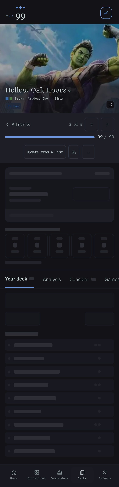
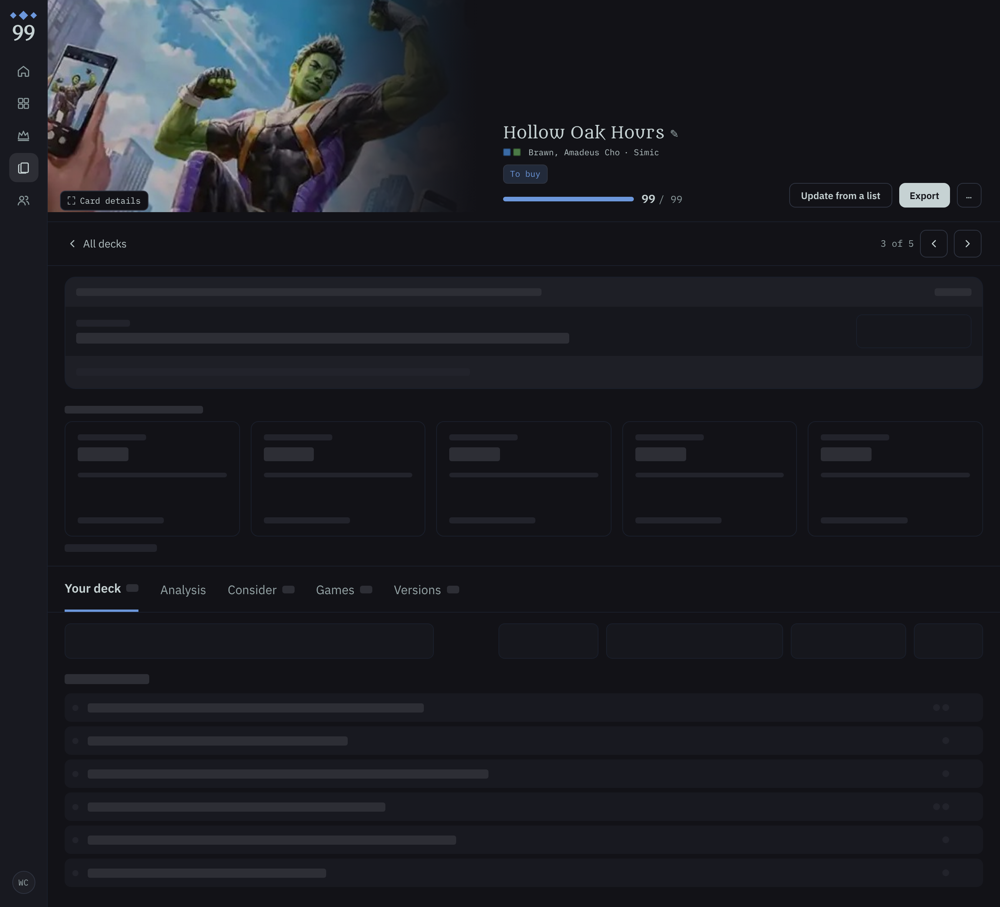

› pressed on Ashen Banner Parade. Hollow Oak Hours’ header and the strip (3 of 5) draw at once; everything below the header is the skeleton until the deck lands.


Real from the press: art, name, colours and commander, status chip, the count, the actions (the same on every deck) and the strip.
Where it comes from: the deck list the page already reads for the flip carries these fields; the neighbours’ art is preloaded with the existing prefetch.
Still live: ‹ › and ← → work during the skeleton, so a quick run of presses walks the list without waiting for each deck.
Shapes: to-do card shell, mix cells, tab words with count bars, tools and card rows, in the shipped skeleton tokens and pulse.
Arrives late (no shape held): the bracket chip and notice tag, which the list does not know.